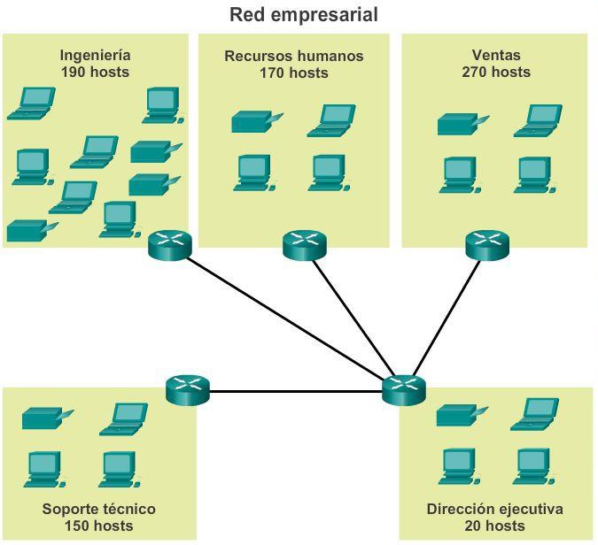
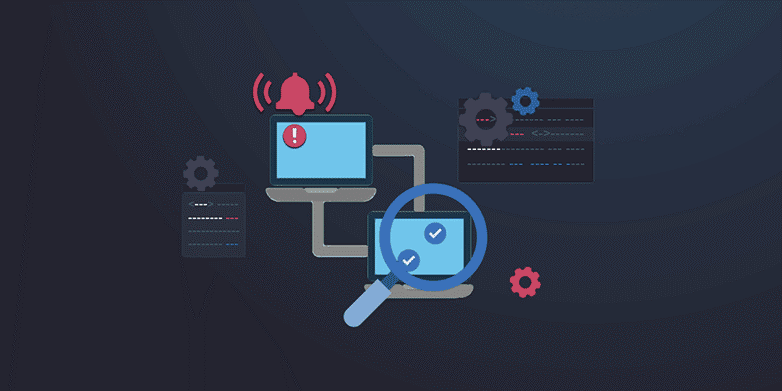
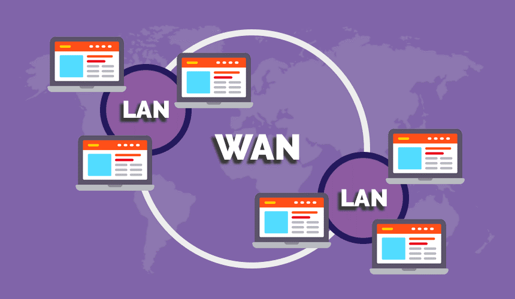

UNIDAD IV: Identificación de Requisitos y Limitaciones Técnicas en el Diseño de Redes
El proceso de diseño de una red es un pilar crucial para lograr una
infraestructura eficiente y adaptable, capaz de sostener el crecimiento
tecnológico de cualquier organización. Al iniciar un proyecto de redes,
la identificación de requisitos y limitaciones técnicas permite al equipo
de diseño crear un sistema que no solo responda a las necesidades actuales
del cliente, sino que sea escalable, seguro y preparado para adaptarse a
futuras demandas. A continuación, exploraremos las fases de recopilación
de requisitos, identificación de limitaciones, y cómo alinear estos elementos
con los objetivos organizacionales.

-
Recopilación de Requisitos: Prioridades y Objetivos del Cliente.
El primer paso en el diseño de una red de datos es comprender a fondo
las necesidades del cliente. Esto implica trabajar en estrecha colaboración
para determinar sus prioridades, objetivos a corto y largo plazo, así como el
rol que desempeñará la red en sus operaciones. Los requisitos pueden clasificarse
en varios tipos:
-
Requisitos Funcionales: Definen las capacidades específicas que la red
debe proporcionar, como el soporte para aplicaciones críticas, alta disponibilidad
y velocidad de transmisión de datos.
-
Requisitos de Rendimiento: Establecen expectativas de eficiencia,
como el ancho de banda, la latencia y los tiempos de respuesta en
función de la cantidad de usuarios.
-
Requisitos de Seguridad: Identifican los mecanismos de protección
necesarios para salvaguardar la integridad y confidencialidad de los
datos en circulación.
-
Requisitos de Escalabilidad: Determinan la capacidad de la red para crecer
en función de la expansión del negocio y la incorporación de nuevas tecnologías.
-
Identificación de Requisitos y Limitaciones Técnicas.
A la par de los requisitos, es fundamental identificar las
limitaciones técnicas del proyecto. Estas limitaciones pueden
provenir de varios factores:
-
Presupuesto: Un factor determinante en la elección de equipos, tecnologías y el alcance del proyecto.
-
Infraestructura Existente: Evaluar la infraestructura actual permite decidir si es posible realizar mejoras o si es necesario implementar una nueva arquitectura.
-
Capacidades Técnicas del Personal: El nivel de experiencia del equipo que mantendrá la red afecta las decisiones sobre la complejidad de la arquitectura de red.
-
Restricciones Físicas y de Espacio: Factores como el espacio disponible para los servidores, racks o equipo de comunicaciones en las instalaciones de la organización.
Alineación de Requisitos con Objetivos Organizacionales.
Para que una red de datos sea verdaderamente útil, su diseño debe estar alineado con la misión, visión y objetivos estratégicos de la organización. Este enfoque no solo asegura que la red cumpla con las expectativas del cliente, sino que fortalece su capacidad para responder a cambios futuros.Al diseñar una red pensando en la escalabilidad y crecimiento tecnológico, los equipos de IT deben proyectar las necesidades de conectividad y seguridad a largo plazo. Esto incluye prever actualizaciones en protocolos de comunicación, inversiones en hardware compatible con nuevas aplicaciones y políticas de ciberseguridad.
CONCLUSIÓN.
El proceso de identificación de requisitos y limitaciones técnicas no es solo una fase preliminar, sino una estrategia continua para garantizar que la red de datos se mantenga en sintonía con los objetivos organizacionales. A través de la colaboración entre el cliente y el equipo de diseño, se logran redes robustas, seguras y preparadas para soportar el crecimiento tecnológico, lo que representa una ventaja competitiva en el mundo digital actual.
REFERENCIAS BIBLIOGRÁFICAS.
- Cisco Systems, Inc. (2019). Cisco Networking Academy Program: Designing and Supporting Computer Networks. Pearson Education.
- Doyle, J. (2003). Routing TCP/IP, Volume I (2nd ed.). Cisco Press.
- Forouzan, B. A. (2006). Data Communications and Networking (4th ed.). McGraw-Hill.
- Kurose, J., & Ross, K. (2017). Computer Networking: A Top-Down Approach (7th ed.). Pearson Education.
- Oppenheimer, P. (2011). Top-Down Network Design (3rd ed.). Cisco Press.
- Tanenbaum, A. S., & Wetherall, D. J. (2013). Computer Networks (5th ed.). Pearson Education.
UNIDAD V: Administración y Monitoreo de la Red: Enfoques, Operaciones y Herramientas Esenciales.
La administración y monitoreo de redes es esencial en la gestión de cualquier infraestructura digital, ya que garantiza no solo la operatividad de los servicios, sino también la seguridad y eficiencia en el uso de los recursos. Este artículo te guiará a través de los conceptos fundamentales, abordando las técnicas de administración, las herramientas clave y la importancia de monitorear actividades en la red.

Enfoque Descendente en la Administración de la Red.
Un enfoque descendente para la administración de redes se centra en observar la red desde una visión global hasta llegar a los elementos más específicos. Este enfoque permite identificar problemas potenciales, priorizar recursos y mantener una supervisión centralizada, lo cual facilita la gestión cuando se escala la red en función de las necesidades del negocio. El objetivo es tener una red controlada y estructurada que mantenga un flujo constante y seguro de datos.
Monitoreo de Operaciones: ¿Por Qué Es Clave?
El monitoreo de operaciones es vital para detectar anomalías y actuar a tiempo en situaciones críticas. Mediante el monitoreo continuo, los administradores pueden observar el rendimiento de la red, el estado de los dispositivos conectados y el flujo de tráfico. Con ello, se pueden prevenir interrupciones y mejorar el tiempo de respuesta ante fallos, optimizando así la experiencia del usuario final. Este tipo de monitoreo no solo incrementa la estabilidad, sino que también permite tomar decisiones informadas sobre la actualización y el mantenimiento de la red.
Herramientas de Monitoreo de Redes.
Actualmente, existen múltiples herramientas que facilitan el monitoreo y administración de redes. Algunas de las más utilizadas incluyen:
-
Nagios: Ideal para monitorear el rendimiento, detectar fallos y recibir notificaciones en tiempo real.
-
Wireshark: Proporciona un análisis detallado de tráfico en la red, útil para diagnosticar problemas.
-
SolarWinds Network Performance Monitor: Monitorea el rendimiento de dispositivos y servicios de red, con alertas personalizables.
Monitoreo de Actividades de Usuarios: Seguridad en la Red
Para proteger la red, es crucial monitorear las actividades de los usuarios. El uso indebido de los recursos de la red puede derivar en una sobrecarga de tráfico o, peor aún, en accesos no autorizados a datos sensibles. A través del monitoreo de usuarios, se pueden identificar actividades sospechosas, aplicar restricciones y realizar auditorías de acceso. Este tipo de vigilancia es vital para evitar brechas de seguridad y para mantener la integridad de los datos y recursos de la organización.
CONCLUSIÓN.
La administración y monitoreo de redes es un pilar para cualquier organización que dependa de la tecnología. Implementar un enfoque descendente y emplear herramientas de monitoreo confiables asegura un mejor rendimiento y una mayor protección contra amenazas. En un entorno donde los recursos y datos están en constante movimiento, una red bien administrada y monitoreada es clave para la eficiencia y seguridad de toda la infraestructura tecnológica.
REFERENCIAS BIBLIOGRÁFICAS.
- Stallings, W. (2013). Redes de computadoras y el Internet.
- Tanenbaum, A. S., & Wetherall, D. J. (2010). Redes de computadoras.
- Comer, D. E. (2018). Interconexión de redes con TCP/IP: Principios, protocolos y arquitectura.
- Olifer, N., & Olifer, V. (2005). Redes de computadoras: Principios, tecnologías y protocolos para el diseño de redes.
UNIDAD VI: Integración LAN y WAN. Diseño, Modelos y Creación de Diagramas de Redes.
La integración de redes LAN (Red de Área Local) y WAN (Red de Área Amplia) es un proceso esencial en la creación de infraestructuras de red para organizaciones de cualquier tamaño. Este tipo de integración permite que tanto dispositivos locales como remotos se comuniquen sin problemas, asegurando así que los recursos estén disponibles para todos los usuarios de forma confiable y segura.
Aquí exploraremos el diseño de redes de amplia cobertura, el análisis de requisitos y los modelos de redes que permiten la interconexión LAN/WAN. También hablaremos sobre la creación de diagramas de red, tanto físicos como lógicos, para una documentación clara y profesional de la red.

Diseño de Redes de Amplia Cobertura: Integración LAN/WAN.
El diseño de redes LAN y WAN abarca varios elementos que deben trabajarse de forma conjunta para asegurar la conectividad. Para crear una red eficiente y segura, es fundamental seguir un proceso bien estructurado:
-
Reunión de Requisitos: El primer paso es comprender completamente los requisitos de la red, que pueden incluir la cantidad de usuarios, el tipo de dispositivos, la necesidad de acceso remoto, y los niveles de seguridad necesarios. A partir de esto, se puede estimar el tipo de equipo y la arquitectura requerida para soportar la carga.
-
Análisis de Requisitos: Este análisis permite identificar los requisitos específicos que el diseño de la red debe cumplir, como el ancho de banda necesario, la latencia, las necesidades de redundancia y las especificaciones de seguridad. Este análisis es crucial para optimizar la eficiencia de la red y evitar problemas futuros de escalabilidad.
-
Modelos de Redes y el Modelo de Diseño Jerárquico: Al diseñar redes de amplia cobertura, el modelo de red jerárquico es una de las metodologías más efectivas. Este modelo organiza la red en capas, simplificando la administración y escalabilidad. El modelo jerárquico de tres capas se compone de:
-
Capa de Acceso: Es donde los dispositivos finales, como computadoras y teléfonos, se conectan a la red.
-
Capa de Distribución: Esta capa maneja el tráfico entre los dispositivos de la capa de acceso y la capa de núcleo, aplicando políticas de seguridad y filtrado.
-
Capa de Núcleo: Esta capa es el centro de la red y es responsable de dirigir el tráfico de manera rápida y eficiente entre diferentes partes de la red.
Estos componentes trabajan juntos para lograr un flujo de datos eficiente y estable, y ayudan a reducir los puntos de fallo mediante redundancia y segmentación de tráfico.
-
Ubicación de los Servidores: En el diseño de redes LAN y WAN, es importante considerar la ubicación de los servidores. Los servidores pueden ubicarse en la capa de núcleo o en la capa de distribución, dependiendo de la cantidad de usuarios que se conecten a ellos y la carga de trabajo. La ubicación estratégica de los servidores optimiza el rendimiento y asegura que el tráfico de red fluya de forma ágil.
Diagramas de Red: Creación y Utilidad.
Los diagramas de red son una herramienta fundamental para visualizar, documentar y planificar la infraestructura de red. Estos se dividen en dos tipos principales:
- Diagrama de Arquitectura Lógica: Este tipo de diagrama representa la estructura de la red a un nivel conceptual. Muestra cómo se conectan los dispositivos entre sí, incluyendo servidores, routers y puntos de acceso. El diagrama lógico ayuda a visualizar el flujo de datos, las políticas de seguridad, las rutas de redundancia y el direccionamiento IP. No muestra detalles físicos como el tipo de cableado o la ubicación específica de los equipos, sino la estructura de comunicación de la red.
- Diagrama de Arquitectura Física: Aquí se detalla la disposición física de los dispositivos y la conexión física entre ellos. Este tipo de diagrama muestra los dispositivos específicos, su ubicación exacta y cómo están conectados físicamente. Incluye información sobre los cables, puertos, racks y el equipamiento físico, siendo útil para los técnicos que trabajan directamente en la infraestructura.
Desarrollo de Diagramas Modulares
El desarrollo modular permite dividir la red en componentes independientes y facilitar así su expansión o ajuste. Un diseño modular ofrece flexibilidad y hace que la red sea más sencilla de escalar y mantener, ya que cada módulo (como el de acceso, distribución o núcleo) puede modificarse sin afectar el resto de la red. Además, permite incorporar futuras expansiones, como conexiones adicionales o nuevas oficinas remotas, sin alterar el funcionamiento de toda la red.
Beneficios de Elaborar Diagramas Físicos y Lógicos
La elaboración de diagramas físicos y lógicos es fundamental para el diseño y documentación de una red eficiente y organizada. Estos diagramas ayudan a los equipos técnicos a entender la estructura de la red, facilitando la resolución de problemas, el mantenimiento y la expansión de la infraestructura. Además, son una referencia importante para gestionar permisos de acceso y asegurar que las políticas de seguridad estén correctamente implementadas.
CONCLUSIÓN.
La integración de redes LAN y WAN en una infraestructura amplia y robusta es un proceso complejo, pero esencial para cualquier organización que busque mantener la conectividad de sus recursos. Al seguir un modelo de diseño jerárquico, analizar detalladamente los requisitos de la red y crear diagramas lógicos y físicos, se puede lograr una red escalable, segura y fácil de gestionar.
El diseño modular y la ubicación estratégica de los servidores son aspectos adicionales que optimizan el rendimiento de la red, garantizando que todos los usuarios tengan acceso a los recursos que necesitan en cualquier momento y lugar. La clave para el éxito en la administración de redes radica en una planificación meticulosa y una documentación detallada, elementos que ayudarán a que la red esté preparada para el crecimiento y los desafíos futuros.
REFERENCIAS BIBLIOGRÁFICAS.
- Stallings, W. (2013). Redes de computadoras y el Internet.
- Tanenbaum, A. S., & Wetherall, D. J. (2010). Redes de computadoras.
- Oppenheimer, P. (2010). Diseño de redes: Enfoque descendente.
- Forouzan, B. A. (2007). Comunicación de datos y redes de computadoras.